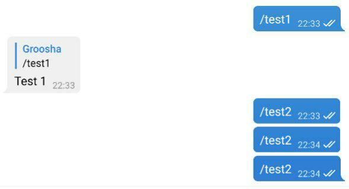
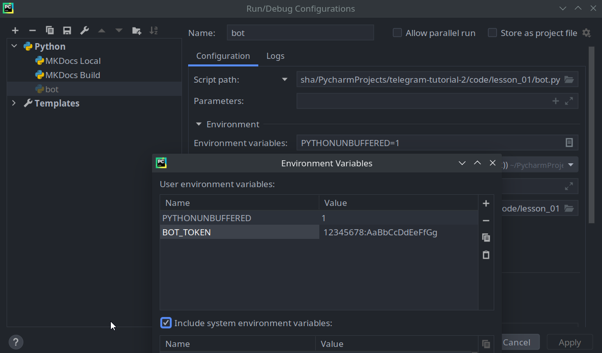

Знакомство с aiogram¶
Установка¶
Для начала давайте создадим каталог для бота, организуем там virtual environment (далее venv) и
установим библиотеку aiogram.
Проверим, что установлен Python версии 3.7 (если вы знаете, что установлен 3.8 и выше, можете пропустить этот кусок):
[groosha@main lesson_01]$ python3.7
Python 3.7.6 (default, Apr 27 2020, 00:17:38)
[GCC 9.3.0] on linux
Type "help", "copyright", "credits" or "license" for more information.
>>> exit()
[groosha@main lesson_01]$
О версиях aiogram
В этой главе используется aiogram версии 2.9.2, но перед началом работы рекомендую заглянуть в
канал релизов библиотеки и проверить наличие более новой версии. Подойдёт любая
более новая, начинающаяся с цифры 2, поскольку в будущем ожидается релиз aiogram 3.0 с заметными изменениями
и без обратной совместимости.
Чтобы избежать неприятностей, зафиксируемся на 2.9.2 и далее будем обновляться вручную.
[groosha@main lesson_01]$ python3.7 -m venv venv
[groosha@main lesson_01]$ echo "aiogram==2.9.2" > requirements.txt
[groosha@main lesson_01]$ source venv/bin/activate
(venv) [groosha@main lesson_01]$ pip install -r requirements.txt
# ...здесь куча строк про установку...
Successfully installed Babel-2.8.0 aiogram-2.9.2 aiohttp-3.6.2 async-timeout-3.0.1 attrs-19.3.0 certifi-2020.6.20 chardet-3.0.4 idna-2.10 multidict-4.7.6 pytz-2020.1 typing-extensions-3.7.4.2 yarl-1.5.1
WARNING: You are using pip version 19.2.3, however version 20.2.1 is available.
You should consider upgrading via the 'pip install --upgrade pip' command.
(venv) [groosha@main lesson_01]$
Обратите внимание на префикс "venv" в терминале. Он указывает, что мы находимся в виртуальном окружении с именем "venv".
Проверим, что внутри venv вызов команды python указывает на всё тот же Python 3.7:
(venv) [groosha@main lesson_01]$ python
Python 3.7.6 (default, Apr 27 2020, 00:17:38)
[GCC 9.3.0] on linux
Type "help", "copyright", "credits" or "license" for more information.
>>> exit()
(venv) [groosha@main lesson_01]$ deactivate
[groosha@main lesson_01]$
Последней командой deactivate мы вышли из venv, чтобы он нам не мешал.
Первый бот¶
Давайте создадим файл bot.py с базовым шаблоном бота на aiogram:
#!venv/bin/python
import logging
from aiogram import Bot, Dispatcher, executor, types
# Объект бота
bot = Bot(token="12345678:AaBbCcDdEeFfGgHh")
# Диспетчер для бота
dp = Dispatcher(bot)
# Включаем логирование, чтобы не пропустить важные сообщения
logging.basicConfig(level=logging.INFO)
# Хэндлер на команду /test1
@dp.message_handler(commands="test1")
async def cmd_test1(message: types.Message):
await message.reply("Test 1")
if __name__ == "__main__":
# Запуск бота
executor.start_polling(dp, skip_updates=True)
Первое, на что нужно обратить внимание: aiogram — асинхронная библиотека, поэтому ваши функции тоже должны быть асинхронными, а перед вызовами методов API нужно ставить ключевое слово await, т.к. эти вызовы возвращают корутины.
Асинхронное программирование в Python
Не стоит пренебрегать официальной документацией!
Прекрасный туториал по asyncio доступен на сайте Python.
Если вы в прошлом работали с какой-то другой библиотекой для Telegram, например, pyTelegramBotAPI, то концепция
хэндлеров (обработчиков событий) вам сразу станет понятна, разница лишь в том, что в aiogram хэндлерами управляет диспетчер.
Диспетчер регистрирует функции-обработчики, дополнительно ограничивая перечень вызывающих их событий через фильтры.
После получения очередного апдейта (события от Telegram), диспетчер выберет нужную функцию обработки, подходящую по всем
фильтрам, например, «обработка сообщений, являющихся изображениями, в чате с ID икс и с длиной подписи игрек». Если две
функции имеют одинаковые по логике фильтры, то будет вызвана та, что зарегистрирована раньше.
Чтобы зарегистрировать функцию как обработчик сообщений, нужно сделать одно из двух действий:
1. Навесить на неё декоратор, как в примере выше.
С различными типами декораторов мы познакомимся позднее.
2. Напрямую вызвать метод регистрации у диспетчера.
Рассмотрим следующий код:
# Хэндлер на команду /test1
@dp.message_handler(commands="test1")
async def cmd_test1(message: types.Message):
await message.reply("Test 1")
# Хэндлер на команду /test2
async def cmd_test2(message: types.Message):
await message.reply("Test 2")
Давайте запустим с ним бота:

Функция cmd_test2 не работает, т.к. диспетчер о ней не знает. Исправим эту ошибку
и отдельно зарегистрируем функцию:
# Хэндлер на команду /test2
async def cmd_test2(message: types.Message):
await message.reply("Test 2")
# Где-то в другом месте...
dp.register_message_handler(cmd_test2, commands="test2")
Снова запустим бота:

Обработка ошибок¶
При работе бота неизбежно возникновение различных ошибок, связанных не с кодом, а с внешними событиями. Простейший пример:
попытка отправить сообщение пользователю, заблокировавшему бота. Чтобы не оборачивать каждый вызов в try..except,
в aiogram существует специальный хэндлер для исключений, связанных с Bot API.
Рассмотрим следующий пример кода, имитирующий задержку перед ответом пользователю:
@dp.message_handler(commands="block")
async def cmd_block(message: types.Message):
await asyncio.sleep(10.0) # Здоровый сон на 10 секунд
await message.reply("Вы заблокированы")
За эти 10 секунд пользователь может успеть заблокировать бота со своей стороны и попытка вызвать метод reply приведёт
к появлению исключения BotBlocked. Напишем специальный хэндлер для этого исключения:
from aiogram.utils.exceptions import BotBlocked
@dp.errors_handler(exception=BotBlocked)
async def error_bot_blocked(update: types.Update, exception: BotBlocked):
# Update: объект события от Telegram. Exception: объект исключения
# Здесь можно как-то обработать блокировку, например, удалить пользователя из БД
print(f"Меня заблокировал пользователь!\nСообщение: {update}\nОшибка: {exception}")
# Такой хэндлер должен всегда возвращать True,
# если дальнейшая обработка не требуется.
return True
Аналогично пишутся обработчики и на другие исключения. Таким образом, если одна и та же непредвиденная ситуация может возникнуть в различных хэндлерах, то можно вынести её обработку в отдельный хэндлер ошибок. Кода будет меньше, а оставшийся станет читабельнее.
Важно
У errors_handler есть одна особенность, из-за которой его использование может быть нежелательно. Дело в том, что
после срабатывания и завершения хэндлера, управление в исходную функцию не возвращается. Проще говоря, если,
например, 57-я итерация цикла из 100 привела к срабатыванию errors_handler, остальные итерации выполнены не будут,
как и весь остальной код исходной функции. В этом случае ничего не остаётся, кроме как использовать try..except.
Синтаксический сахар¶
Для того, чтобы сделать код чище и читабельнее, aiogram расширяет возможности стандартных объектов Telegram.
Например, вместо bot.send_message(...) можно написать message.answer(...) или message.reply(...). В последних
двух случаях не нужно подставлять chat_id, подразумевается, что он такой же, как и в исходном сообщении.
Разница между answer и reply простая: первый метод просто отправляет сообщение в тот же чат, второй делает "ответ" на
сообщение из message:
@dp.message_handler(commands="answer")
async def cmd_answer(message: types.Message):
await message.answer("Это простой ответ")
@dp.message_handler(commands="reply")
async def cmd_reply(message: types.Message):
await message.reply('Это ответ с "ответом"')

Более того, для большинства типов сообщений есть вспомогательные методы вида "answer_{type}" или "reply_{type}", например:
@dp.message_handler(commands="dice")
async def cmd_dice(message: types.Message):
await message.answer_dice(emoji="🎲")
что значит 'message: types.Message' ?
Python является интерпретируемым языком с сильной, но динамической типизацией,
поэтому встроенная проверка типов, как, например, в C++ или Java, отсутствует. Однако начиная с версии 3.5
в языке появилась поддержка подсказок типов, благодаря которой
различные чекеры и IDE вроде PyCharm анализируют типы используемых значений и подсказывают
программисту, если он передаёт что-то не то. В данном случае подсказка types.Message соообщает
PyCharm-у, что переменная message имеет тип Message, описанный в модуле types библиотеки
aiogram (см. импорты в начале кода). Благодаря этому IDE может на лету подсказывать атрибуты и функции.
При вызове команды /dice бот отправит в тот же чат игральный кубик. Разумеется, если его надо отправить в какой-то
другой чат, то придётся по-старинке вызывать await bot.send_dice(...). Но объект bot (экземпляр класса Bot) может быть
недоступен в области видимости конкретной функции. К счастью, объект бота доступен во всех типах апдейтов: Message,
CallbackQuery, InlineQuery и т.д. Предположим, вы хотите по команде /dice отправлять кубик не в тот же чат, а в канал
с ID -100123456789. Перепишем предыдущую функцию:
@dp.message_handler(commands="dice")
async def cmd_dice(message: types.Message):
await message.bot.send_dice(-100123456789, emoji="🎲")
Всё хорошо, но если вдруг вы захотите поделиться с кем-то кодом, то придётся каждый раз помнить об удалении
из исходников токена бота, иначе придётся его перевыпускать у @BotFather. Чтобы обезопасить себя,
давайте перестанем указывать токен прямо в коде, а вынесем его как переменную окружения.
Замените следующие строчки из начала файла:
import logging
from aiogram import Bot, Dispatcher, executor, types
bot = Bot(token="12345678:AaBbCcDdEeFfGgHh")
import logging
from aiogram import Bot, Dispatcher, executor, types
from os import getenv
from sys import exit
bot_token = getenv("BOT_TOKEN")
if not bot_token:
exit("Error: no token provided")
bot = Bot(token=bot_token)
Но теперь ваш бот не запустится, т.к. будет сразу завершаться с ошибкой Error: no token provided.
Чтобы передать переменную окружения в PyCharm, откройте сверху раздел Run -> Edit Configurations
и добавьте в окне Environment Variables переменную с именем BOT_TOKEN и значением токена.

Запустите снова бота и убедитесь, что он работает. Получившийся код можно смело сохранять в PyCharm в File Templates.
На этом мы закончим знакомство с библиотекой, а в следующих главах рассмотрим другие "фишки" aiogram и Telegram Bot API.